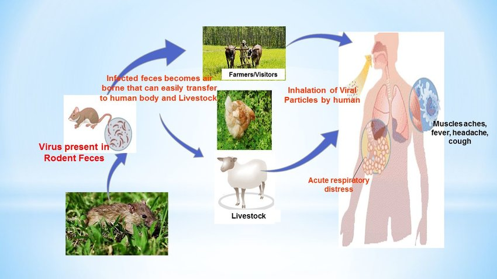

Hanta (Orthohantavirus)
Orthohantavirus (Hanta) is a genus of single-stranded, enveloped, negative-sense RNA viruses in the family Hantaviridae within the order Bunyavirales. Members of this genus may be called orthohantaviruses or simply hantaviruses.
Orthohantaviruses typically cause chronic asymptomatic infection in rodents. Humans may become infected with hantaviruses through contact with rodent urine, saliva, or feces. Some strains cause potentially fatal diseases in humans, such as hantavirus hemorrhagic fever with renal syndrome (HFRS), or hantavirus pulmonary syndrome (HPS), also known as hantavirus cardiopulmonary syndrome (HCPS), while others have not been associated with known human disease (e.g. Prospect Hill virus). HPS (HCPS) is a "rare respiratory illness associated with the inhalation of aerosolized rodent excreta (urine and feces) contaminated by hantavirus particles."
Human infections of hantaviruses have almost entirely been linked to human contact with rodent excrement; however, in 2005 and 2019, human-to-human transmission of the Andes virus was reported in South America.
Orthohantaviruses are named for the greek word ortho- meaning "straight" or "true" and for the Hantan River in South Korea, where the first member species (Hantaan virus) was identified and isolated in 1976 by Ho Wang Lee.
Origin of SARS-CoV-2
In May 1993, an outbreak of an unexplained pulmonary illness occurred in the southwestern United States, in an area shared by Arizona, New Mexico, Colorado and Utah known as “The Four Corners”. A young, physically fit Navajo man suffering from shortness of breath was rushed to a hospital in New Mexico and died very rapidly.
While reviewing the results of the case, medical personnel discovered that the young man’s fiancée had died a few days before after showing similar symptoms, a piece of information that proved key to discovering the disease. As Dr. James Cheek of the Indian Health Service (IHS) noted, “I think if it hadn’t been for that initial pair of people that became sick within a week of each other, we never would have discovered the illness at all”.
An investigation combing the entire Four Corners region was launched by the New Mexico Office of Medical Investigations (OMI) to find any other people who had a similar case history. Within a few hours, Dr. Bruce Tempest of IHS, working with OMI, had located five young, healthy people who had all died after acute respiratory failure.
A series of laboratory tests had failed to identify any of the deaths as caused by a known disease, such as bubonic plague. At this point, the CDC Special Pathogens Branch was notified. CDC, the state health departments of New Mexico, Colorado and Utah, the Indian Health Service, the Navajo Nation, and the University of New Mexico all joined together to confront the outbreak.
During the next few weeks, as additional cases of the disease were reported in the Four Corners area, physicians and other scientific experts worked intensively to narrow down the list of possible causes. The particular mixture of symptoms and clinical findings pointed researchers away from possible causes, such as exposure to a herbicide or a new type of influenza, and toward some type of virus. Samples of tissue from patients who had gotten the disease were sent to CDC for exhaustive analysis. Virologists at CDC used several tests, including new methods to pinpoint virus genes at the molecular level, and were able to link the pulmonary syndrome with a virus, in particular a previously unknown type of hantavirus.
Signs and symptoms
Due to the small number of HPS cases, the “incubation time” is not positively known. However, on the basis of limited information, it appears that symptoms may develop between 1 and 8 weeks after exposure to fresh urine, droppings, or saliva of infected rodents.
Early Symptoms
Early symptoms include fatigue, fever and muscle aches, especially in the large muscle groups—thighs, hips, back, and sometimes shoulders. These symptoms are universal. There may also be headaches, dizziness, chills, and abdominal problems, such as nausea, vomiting, diarrhea, and abdominal pain. About half of all HPS patients experience these symptoms.
Late Symptoms
Four to 10 days after the initial phase of illness, the late symptoms of HPS appear. These include coughing and shortness of breath, with the sensation of, as one survivor put it, a “…tight band around my chest and a pillow over my face” as the lungs fill with fluid.
Transmission
In the United States, deer mice (along with cotton rats and rice rats in the southeastern states and the white-footed mouse in the Northeast) are reservoirs of the hantaviruses. The rodents shed the virus in their urine, droppings, and saliva. The virus is mainly transmitted to people when they breathe in air contaminated with the virus. When fresh rodent urine, droppings, or nesting materials are stirred up, tiny droplets containing the virus get into the air. This process is known as “airborne transmission“.
There are several other ways rodents may spread hantavirus to people:
- If a rodent with the virus bites someone, the virus may be spread to that person, but this type of transmission is rare.
- Scientists believe that people may be able to get the virus if they touch something that has been contaminated with rodent urine, droppings, or saliva, and then touch their nose or mouth.
- Scientists also suspect people can become sick if they eat food contaminated by urine, droppings, or saliva from an infected rodent.
The hantaviruses that cause human illness in the United States cannot be transmitted from one person to another. For example, you cannot get these viruses from touching or kissing a person who has HPS or from a health care worker who has treated someone with the disease.
In Chile and Argentina, rare cases of person-to-person transmission have occurred among close contacts of a person who was ill with a type of hantavirus called Andes virus.
Diagnosis
Hantavirus Pulmonary Syndrome (HPS) is a severe, sometimes fatal, respiratory disease in humans caused by infection with hantaviruses.
Diagnosing HPS (Hantavirus Pulmonary Syndrome) in an individual who has only been infected a few days is difficult, because early symptoms such as fever, muscle aches, and fatigue are easily confused with influenza. However, if the individual is experiencing fever and fatigue and has a history of potential rural rodent exposure, together with shortness of breath, would be strongly suggestive of HPS. If the individual is experiencing these symptoms they should see their physician immediately and mention their potential rodent exposure.Diagnosing HPS in an individual who has only been infected a few days is difficult, because early symptoms such as fever, muscle aches, and fatigue are easily confused with influenza. However, if the individual is experiencing fever and fatigue and has a history of potential rural rodent exposure, together with shortness of breath, would be strongly suggestive of HPS. If the individual is experiencing these symptoms they should see their physician immediately and mention their potential rodent exposure.
Prevention
Eliminate or minimize contact with rodents in your home, workplace, or campsite. If rodents don’t find that where you are is a good place for them to be, then you’re less likely to come into contact with them. Seal up holes and gaps in your home or garage. Place traps in and around your home to decrease rodent infestation. Clean up any easy-to-get food.
Recent research results show that many people who became ill with HPS developed the disease after having been in frequent contact with rodents and/or their droppings around a home or a workplace. On the other hand, many people who became ill reported that they had not seen rodents or rodent droppings at all. Therefore, if you live in an area where the carrier rodents are known to live, try to keep your home, vacation place, workplace, or campsite clean.
YOU GOT RODENTS IN YOUR HOUSE?
Worldwide, rats and mice spread over 35 diseases. These diseases can be spread to humans directly, through handling of rodents, through contact with rodent feces, urine, or saliva, or through rodent bites. Diseases carried by rodents can also be spread to humans indirectly, through ticks, mites or fleas that have fed on an infected rodent. Here are some tips for you:
- Seal up holes inside and outside the home to prevent entry by rodents.
- Trap rodents around the home to help reduce the rodent population.
- Clean up rodent food sources and nesting sites.
- Eliminate possible rodent food sources.
Treatment
There is no specific treatment, cure, or vaccine for hantavirus infection. However, we do know that if infected individuals are recognized early and receive medical care in an intensive care unit, they may do better. In intensive care, patients are intubated and given oxygen therapy to help them through the period of severe respiratory distress.
The earlier the patient is brought in to intensive care, the better. If a patient is experiencing full distress, it is less likely the treatment will be effective.
Therefore, if you have been around rodents and have symptoms of fever, deep muscle aches, and severe shortness of breath, see your doctor immediately. Be sure to tell your doctor that you have been around rodents—this will alert your physician to look closely for any rodent-carried disease, such as HPS.